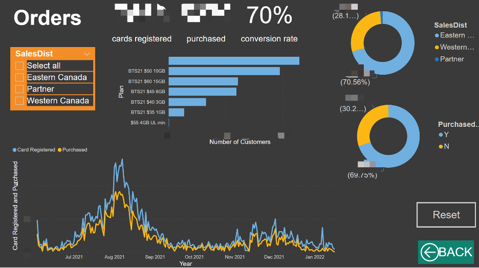

Customer Relationship Data Analytics
*Due to confidentiality reasons, some information is hidden.
CTExcel is a telecommunication service product in Canada. In this project, I analyzed the customer relationship management (CRM) data of CTExcel in 2021 and created a dashboard for the sales team.
Problem Statement
In July 2021, the purchase rate of CTExcel’s marketing campaign was less than the expectation. My manager asked me to analyze the data and find a solution to increase the purchase rate in the next few months.
Dashboard
I created a dashboard with Power BI using the CRM data of CTExcel.
On the order page, we can see the card registered, plan purchased, and conversion rate of all the orders. The upper donut chart shows the card registered number by sales districts, while the lower donut chart shows the number of purchased and not purchased customers. In the middle, we see a bar chart of the number of customers by all the mobile plans. The line chart shows the changes in card registered and plan purchased numbers over time. A slicer on the left side can be used to show the data from each sales district.
If we pull the data before Aug 2021, the conversion rate is only 40%. In comparison, Aug 2019 was 56%. The majority of CTExcel’s customers are international students and travelers. The sales data follows a timer series pattern each year. Also, I did not consider the data for 2020 since it was much lower than those the other years due to COVID-19.
We held separate marketing campaigns for most Canadian colleges and universities. Therefore, I created a university page to show the breakdown of orders by university. We can see the card registered, plan purchased, and conversion rate of each university. A treemap shows the top universities in terms of card registered quantity by box size. Two filters control the sales districts and universities, respectively.
If you select a university and click Detail Info, you’ll be navigated to the drill through page of the university. Take UA as an example, we can see the numbers of card registered and plan purchased in UA. We can see the sales by year of study in the upper right bar chart. Another bar chart shows all the mobile plans. The line chart below shows the number of purchases by date.
The sales of each store, salesperson, and channel are recorded by URL. Therefore, I created a university page to show the breakdown of orders by URL. We can see the card registered, plan purchased, and conversion rate of each URL. A treemap shows the top URLs in terms of card registered quantity by box size. Two filters control the sales districts and URLs, respectively.
If you select a URL and click Detail Info, you’ll be navigated to the drill through page of the URL. Take BA11 as an example. We can see the numbers of card registered and plan purchased in BA11. We can see a bar chart showing all the mobile plans. The line chart below shows the number of purchases by date. A treemap shows the top universities registered from this URL in terms of card registered quantity by box size.

Solutions
In July 2021, I worked closely with the sales team. From this dashboard, we were able to identify the universities that have cards registered more than 50 and conversion rates of less than 40%. We also identified the underperformed channels and stores.
Based on these findings, company management created new marketing strategies. More resources were put into these underperforming stores and university teams. An additional telemarketing campaign was also running from Aug to Oct 2021.
Eventually, we increased the purchase rate to 70%, and the purchase volume reached 80% of the value of the same time in 2019. This result is undoubtedly encouraging, especially in the summer of 2021, when the impact of COVID-19 on international travel is still high.
